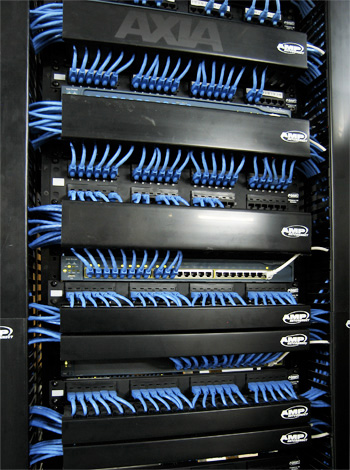

Administración de sistemas informáticos en red
Ciclo Superior
Configurar, administrar y mantener sistemas informáticos, garantizando la funcionalidad, la integridad de los recursos y servicios del sistema, con la calidad exigida y cumpliendo la reglamentación vigente.

- Implantación de sistemas operativos
- Planificación y administración de redes
- Fundamentos de hardware
- Gestión de bases de datos
- Lenguajes de marcas y sistemas de gestión de información
- Administración de sistemas operativos
- Servicios de red e Internet
- Implantación de aplicaciones web
- Administración de sistemas gestores de bases de datos
- Seguridad y alta disponibilidad
- Proyecto de administración de sistemas informáticos en red
- Formación y orientación laboral
- Empresa e iniciativa emprendedora
- Formación en centros de trabajo (F.C.T)
- Lengua extranjera del entorno profesional: Inglés 1 y 2
Puestos de trabajo más relavantes:
- Técnico en administración de sistemas
- Responsable de informática
- Técnico en servicios de Internet
- Técnico en servicios de mensajería electrónica
- Personal de apoyo y soporte técnico
- Técnico en teleasistencia
- Técnico en administración de base de datos
- Técnico de redes
- Supervisor de sistemas
- Técnico en servicios de comunicaciones
- Técnico en entornos web